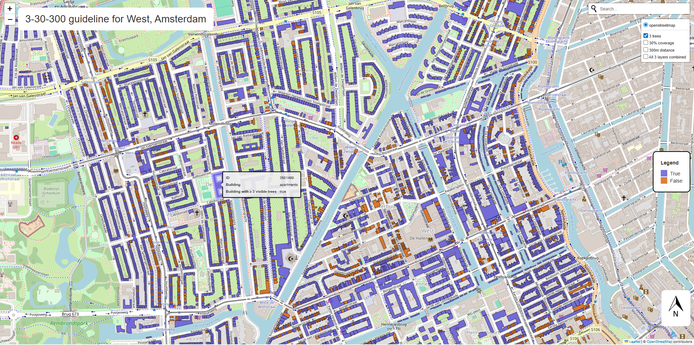
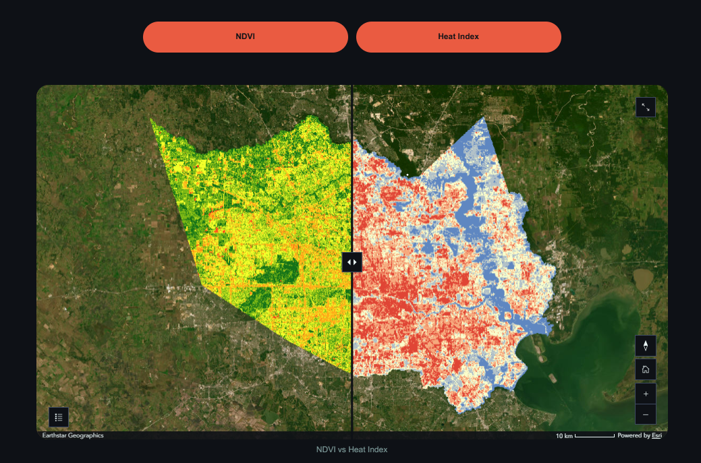
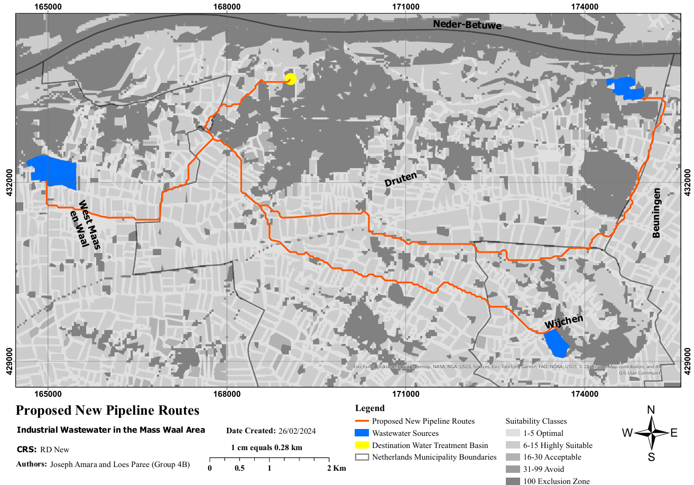

Geo-visualisation Portfolio
Joseph Amara
GIS and Remote Sensing Analyst, Geologist, Environmental Consultant.
About Me & This Portfolio
Hi. I'm Joseph Amara. I am a passionate GIS and Remote Sensing Analyst with a background in Geology and Environmental Consultancy. Welcome to my geo-visualisation portfolio. This space showcases a curated selection of spatial analysis, remote sensing, and cartographic design projects completed during the first year of my Master's program in Geo-information Science at Wageningen University and Research (WUR). Explore the maps below to see how I have applied my skills to transform complex environmental and spatial data into compelling visual stories and actionable insights.
Experience
Selected work with visualisation projects
Visualizing the 3-30-300 guideline for Amsterdam West

The 3-30-300 is a green space guideline that specifies that residents should be able to see 3 trees from their homes, 30% of their neigbourhood is covered by trees and they should be at least 300m from the nearest quality green space. The project aimed to create a visual representation of the 3-30-300 guideline for Amsterdam West. Through the use of Sentinel-2 satellite data (to obtain NDVI), building footprints and road networkks from Open Street Maps and tree data from the City of Amsterdam, we developed an interactive Leaflet map that highlights buldings in Amsterdam West that meet the each of the 3-30-300 criteria and those met a combination of the criteria. The project was developed entirely in Python using VS Code.
Key Takeaways:
Objective: The objective of the project was to create an interactive visualization of the 3-30-300 guideline for buildinngs Amsterdam West.
Method: First, to confirm if three trees were visible, the model generated simulated sightlines from buildings to nearby trees and checked for physical obstructions. Secondly, Sentinel-2 data was used to calculate NDVI, which determined whether a building's specific neighbourhood met the 30% green coverage threshold. Thirdly, a network analysis calculated the shortest walking path from each building to the nearest green space to ensure it fell within the 300-metre limit. Finally, all three assessments were combined to flag buildings that successfully met every condition. The final output is an interactive map that visualises the individual and combined results for each property.
Technical Stack and Data: VS Code, Python, Leaflet, Copernicus Sentinel-2, Open Street Maps Dataset
Houston's Heat Divide

This project investigates the environmental inequality of the urban heat island effect across Harris County, Texas. By examining the relationship between vegetation density, surface temperatures, and socioeconomic status, the study highlights how climate vulnerability disproportionately impacts different communities. Ultimately, the project produced an interactive ArcGIS StoryMap to present the findings.
Key Takeaways:
Objective: To highlight the disparity in urban heat distribution across Houston neighbourhoods and provide local government with actionable insights to design fair, climate-resilient policies that promote environmental justice.
Method: The analysis began by calculating Land Surface Temperatures (LST) and deriving vegetation density (NDVI) using 2023 Landsat satellite imagery. These environmental metrics were then spatially overlaid with US Census Bureau income data to identify correlations between neighbourhood wealth, green space, and heat exposure. The result showed that that wealthier neighbourhoods had more green space and were a few degrees cooler than poorer neighbourhoods, which had less green spaces. The results were visualised through an interactive StoryMap to allow users to easily explore the data overlays.
Technical Stack and Data: ArcGIS StoryMaps, Landsat and Socio-demographic Data
Proposed New Pipeline Route for Industrial Wastewater in the Maas Waal Area

This project focuses on spatial decision-making to identify the most suitable path for a new industrial wastewater pipeline in the Maas Waal region. By evaluating various environmental and infrastructural factors, the project showed how automated workflows in ArcGIS Pro can effectively solve complex suitability problems.
Key Takeaways:
Objective: To determine the optimal route for a new wastewater pipeline that connects a specific source to its destination, ensuring the path meets strict conditions regarding current land use, topography, and other geographic constraints.
Method: The routing analysis was entirely designed and automated using ArcGIS Pro ModelBuilder. A custom workflow was constructed to chain together several built-in geoprocessing features, including spatial overlays, cost-distance calculations and the optimal path tool, to evaluate the terrain and land use datasets. This created a repeatable and reproducible model that successfully calculated the most efficient and compliant path across the landscape.
Technical Stack and Data: ArcGIS Pro, Land Use Data, AHN Topographic Data
Comparing Global Thresholding and Random Forest Classification for Improved Flood Mapping Using Sentinel-1 Data: A Case Study of the 2023 Kakhovka Dam Breach

This project evaluates different satellite imagery techniques for rapid flood mapping, using the 2023 Kakhovka Dam breach in Ukraine as a case study. It showed the advantages of machine learning over traditional methods in accurately identifying flooded areas across heterogeneous landscapes.
Key Takeaways:
Objective: To compare the accuracy of a traditional Global Thresholding approach against a Random Forest classification model for mapping flood extents using Sentinel-1 radar data
Method: The study processed pre-flood and during-flood Sentinel-1 radar images. A Random Forest classifier and a Global Threshold method were applied to the data to distinguish water from land. The outputs were then compared against a high-resolution reference map to calculate error rates , revealing that the Random Forest model provided a significantly more reliable flood map.
Tools used: Google Earth Engine, ArcGIS Pro, Sentinel-1
From Grey to Green: A Climate-Adaptive Redesign of De Buurt, Wageningen

This project proposes a climate-adaptive redesign of 'De Buurt', a Wageningen neighbourhood currently vulnerable to urban heat stress due to a lack of green space. By integrating nature-based solutions into the existing streets, the design transforms the paved environment into a resilient, biodiverse, and connected community space.
Key Takeaways:
Objective: To improve the neighbourhood's climate resilience, biodiversity, and access to public green space through a strategic redesign that balances environmental goals with resident needs.
Method: A Multi-Criteria Analysis was first conducted using GIS software to pinpoint areas most in need of green interventions. Based on these insights, a spatial design was developed featuring new green corridors, bioswales, grass pavers and wildflower meadows. The final proposed redesign was visualised through a detailed poster to present a phased, actionable strategy for local stakeholders.
Tools used: ArcGIS Pro, QGIS, Sentinel-2, Canva
Skills & Expertise
Remote Sensing
Google Earth Engine, Sentinel-1, Sentinel-2, Agisoft Metashape, LiDAR, Landsat 7/8
GIS & Spatial Modelling
ArcGIS Pro, QGIS, ArcGIS Online (StoryMaps), Leaflet, Folium and NetLogo
Programming
Python and R
Others
Graphic Design (Canva), Data Management (GitHub/GitLab)